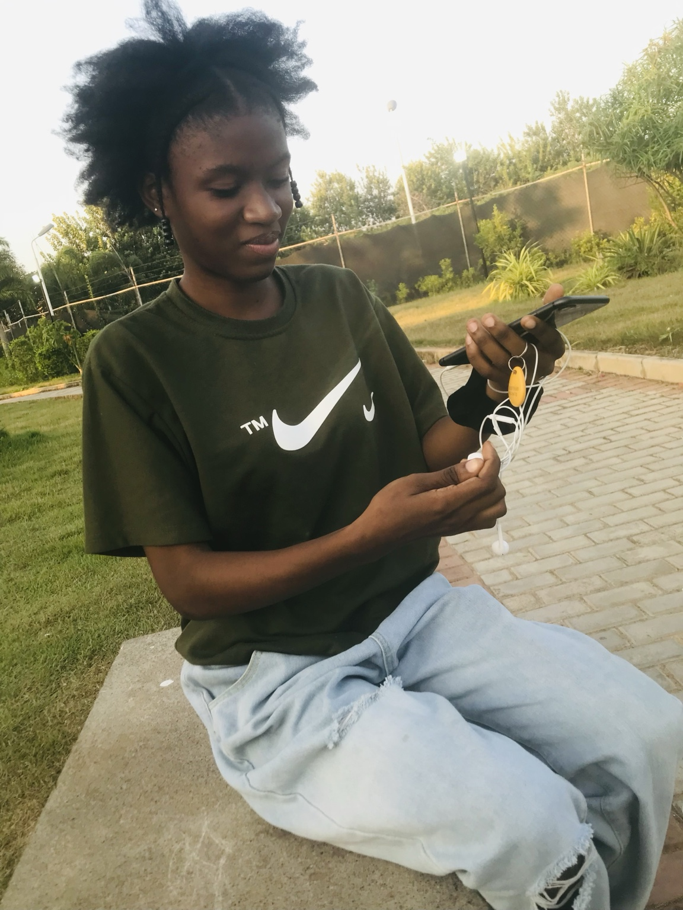
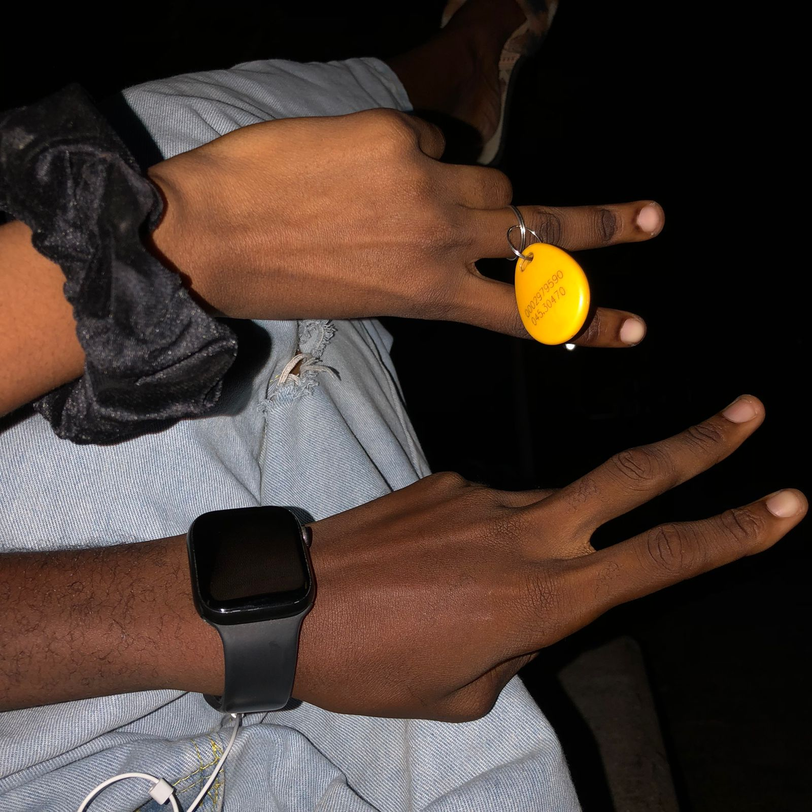
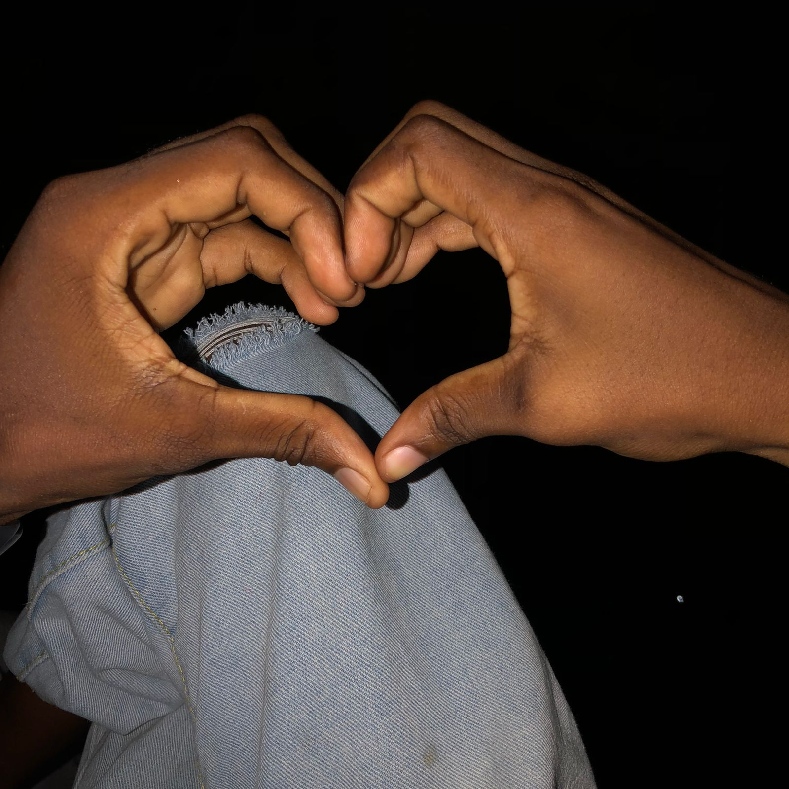
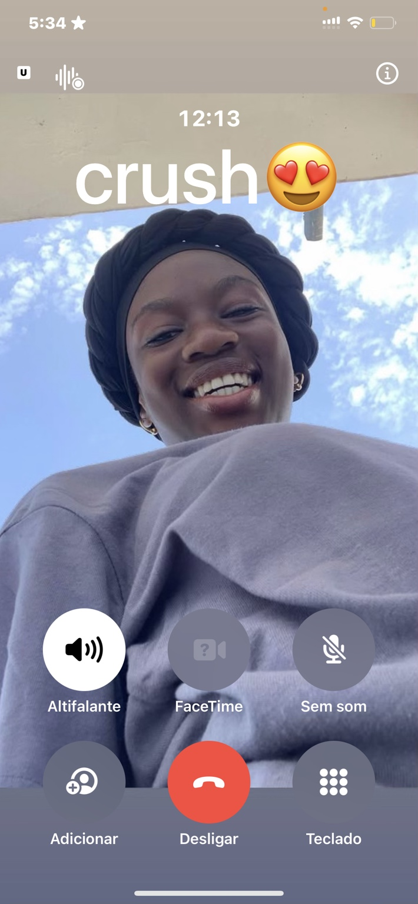
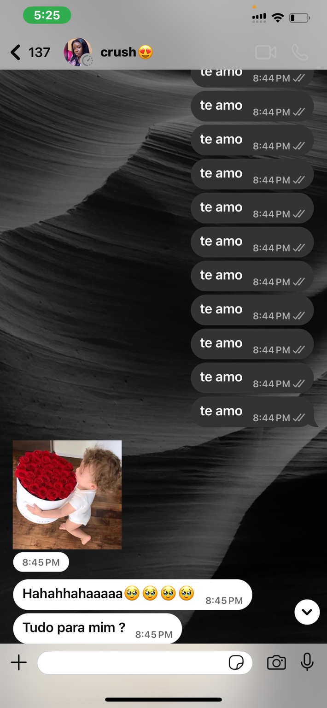
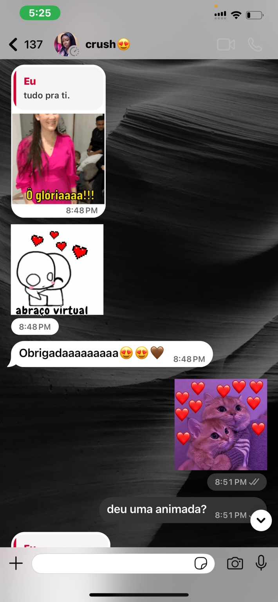
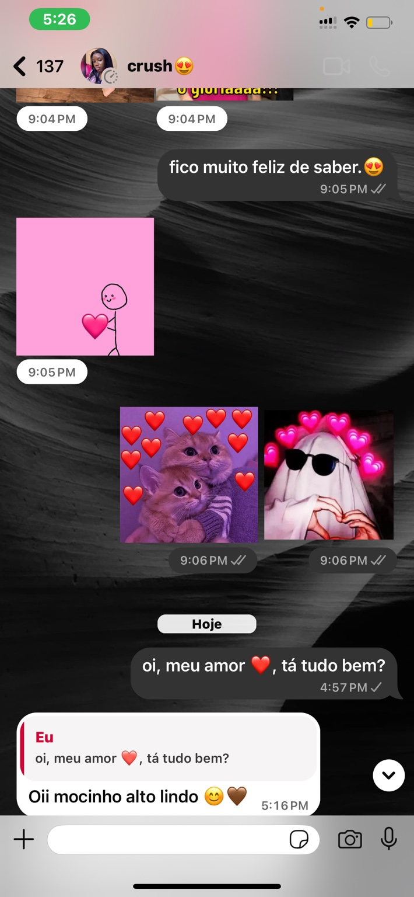

Desde o primeiro olhar… ❤️
Há pessoas que chegam sem fazer barulho, mas deixam tudo diferente. Tu és uma delas. O teu jeito, o teu sorriso e a tua presença começaram a ocupar um lugar especial em mim.

Há pessoas que chegam sem fazer barulho, mas deixam tudo diferente. Tu és uma delas. O teu jeito, o teu sorriso e a tua presença começaram a ocupar um lugar especial em mim.

Gosto desses pequenos momentos que parecem simples, mas que ficam guardados. Porque quando é contigo, até o mais pequeno detalhe ganha significado.

Talvez esta fotografia diga muito sem precisar de palavras: dois lados diferentes, mas uma vontade de formar algo bonito juntos.
Esse sorriso tem um jeito especial de me desarmar. E quanto mais te conheço, mais percebo que não é só beleza: é o teu coração, o teu jeito e a pessoa incrível que és.

Às vezes a gente repete porque uma única vez não consegue explicar tudo o que sente. E contigo, carinho nunca parece demais.

As tuas respostas, as tuas brincadeiras e esse teu jeito de receber carinho fazem-me perceber que existe algo muito bonito entre nós.

Não quero que isto seja apenas uma coleção de momentos bonitos. Quero que sejam os primeiros capítulos de uma história que nós dois ainda vamos escrever.

Depois de todas estas fotos, mensagens, brincadeiras e sentimentos, só falta uma coisa: fazer-te uma pergunta que vem do fundo do meu coração.
Não como uma brincadeira, não só como um “crush”. Quero viver isto contigo de verdade, com carinho, respeito, cumplicidade e muitos momentos para guardar.
Agora a resposta é tua. ❤️